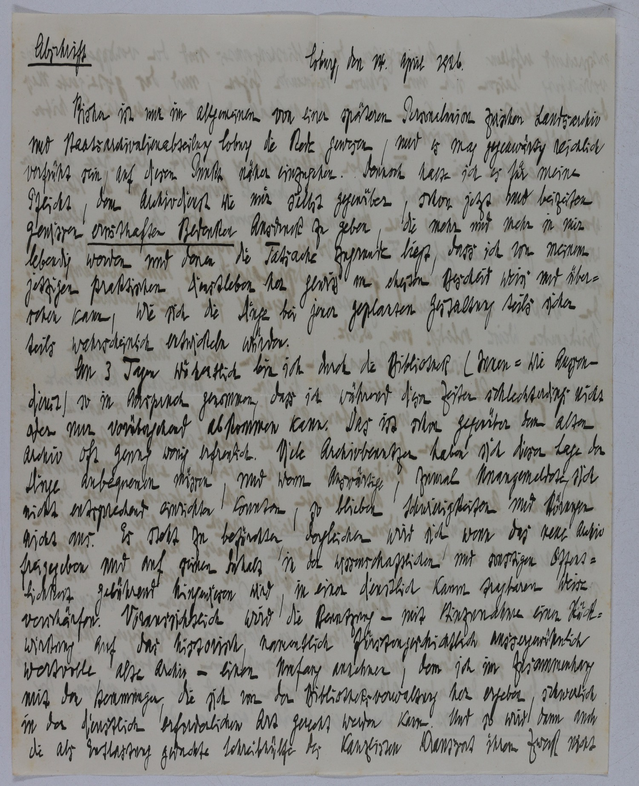

StA Coburg, Nachlass Krieg, 15



Kommentar
Editor: magdalena.weileder@textgrid.de
Archiv: StA Coburg
Bestand: Nachlass Krieg
Signatur: 15
Ort: (Coburg)
Datum: 1926 April 14
Schlagwort: Akt
Schwierigkeitsgrad: schwer
Kurzbetreff:
Abschrift einer Supplik an das Bayerische Hauptstaatsarchiv
Abschrift einer Supplik an das Bayerische Hauptstaatsarchiv
Schreiberhände:
- (S1)
Kommentar:
Diese, vom Archivrat Thilo Krieg vom Landesarchiv Coburg angefertigte Abschrift seiner eigenen Supplik an das Bayerische Hauptstaatsarchiv, in der er seine Bedenken gegenüber einer möglichen Zusammenlegung von Landesarchiv und Staatsarchivalienabteilung äußerte, ist in lateinischer Schreibschrift, deren Lesbarkeit durch die sehr enge Schreibweise erschwert wird.
Diese, vom Archivrat Thilo Krieg vom Landesarchiv Coburg angefertigte Abschrift seiner eigenen Supplik an das Bayerische Hauptstaatsarchiv, in der er seine Bedenken gegenüber einer möglichen Zusammenlegung von Landesarchiv und Staatsarchivalienabteilung äußerte, ist in lateinischer Schreibschrift, deren Lesbarkeit durch die sehr enge Schreibweise erschwert wird.
Entzifferung
(Absatz Beginn)
1 Abschrift Coburg, den 14. April 1926.
2 Bisher ist nur im allgemeinen von einer späteren Personalunion zwischen Landsarchiv
3 und Staatsarchivalienabteilung Coburg die Rede gewesen, und es mag gegenwärtig reichlich
4 verfrüht sein, auf diesen Punkt näher einzugehen. Dennoch halte ich es für meine
5 Pflicht, dem Archivdienst wie mir selbst gegenüber, schon jetzt und beizeiten
6 gewissen ernsthaften Bedenken Ausdruck zu geben, die mehr und mehr in mir
7 lebendig werden und denen die Tatsache zugrunde liegt, dass ich von meinem
8 jetzigen praktischen Dienstleben her gewiss am ehesten Bescheid weiss und über-
9 sehen kann, wie sich die Dinge bei jener geplanten Gestaltung teils sicher
10 teils wahrscheinlich entwickeln würden.
11 An 3 Tagen wöchentlich bin ich durch die Bibliothek (Innen= wie Aussen-
12 dienst) so in Anspruch genommen, dass ich während dieser Zeiten schlechterdings nicht
13 oder nur vorübergehend abkommen kann. Das ist schon gegenüber dem alten
14 Archiv oft genug wenig erfreulich. Viele Archivbenutzer haben sich dieser Lage der
15 Dinge anbequemen müssen, und wenn Auswärtige, zumal Unangemeldete, sich
16 nicht entsprechend einrichten konnten, so blieben Schwierigkeiten und Störungen
17 nicht aus. Es steht zu befürchten, dergleichen wird sich, wenn das neue Archiv
18 freigegeben und auf seinen Inhalt in der wissenschaftlichen und sonstigen Öffent-
19 lichkeit gebührend hingewiesen wird, in einer dienstlich kaum tragbaren Weise
20 verschärfen. Voraussichtlich wird die Benutzung – mit Hinzunahme einer Rück-
21 wirkung auf das historische, namentlich fürstengeschichtlich aussergewöhnlich
22 wertvolle Alte Archiv – einen Umfang annehmen, dem ich im Zusammenhang
23 mit den Hemmungen, die sich von der Bibliotheksverwaltung her ergeben, schwerlich
24 in der dienstlich erforderlichen Art gerecht werden kann. Und so wird dann auch
25 die als Entlastung gedachte Schreibhülfe des Kanzlisten Krausserta) ihren Zweck nicht
26 [weiter auf der Rückseite: entsprechend erfüllen.]
(Absatz Ende)
a) vermutlich handelt es sich um den als Archivoberinspektor an der Staatsarchivalienabteilung Coburg 1924¬–1935 nachweisbaren Hans Krausert
Transkription
(Absatz Beginn)
1 Abschrift Coburg, den 14. April 1926.
2 Bisher ist nur im Allgemeinen von einer späteren Personalunion zwischen Landsarchiv
3 und Staatsarchivalienabteilung Coburg die Rede gewesen, und es mag gegenwärtig reichlich
4 verfrüht sein, auf diesen Punkt näher einzugehen. Dennoch halte ich es für meine
5 Pflicht, dem Archivdienst wie mir selbst gegenüber, schon jetzt und beizeiten
6 gewissen ernsthaften Bedenken Ausdruck zu geben, die mehr und mehr in mir
7 lebendig werden und denen die Tatsache zugrunde liegt, dass ich von meinem
8 jetzigen praktischen Dienstleben her gewiss am ehesten Bescheid weiss und über-
9 sehen kann, wie sich die Dinge bei jener geplanten Gestaltung teils sicher
10 teils wahrscheinlich entwickeln würden.
11 An 3 Tagen wöchentlich bin ich durch die Bibliothek (Innen- wie Aussen-
12 dienst) so in Anspruch genommen, dass ich während dieser Zeiten schlechterdings nicht
13 oder nur vorübergehend abkommen kann. Das ist schon gegenüber dem alten
14 Archiv oft genug wenig erfreulich. Viele Archivbenutzer haben sich dieser Lage der
15 Dinge anbequemen müssen, und wenn Auswärtige, zumal Unangemeldete, sich
16 nicht entsprechend einrichten konnten, so blieben Schwierigkeiten und Störungen
17 nicht aus. Es steht zu befürchten, dergleichen wird sich, wenn das neue Archiv
18 freigegeben und auf seinen Inhalt in der wissenschaftlichen und sonstigen Öffent-
19 lichkeit gebührend hingewiesen wird, in einer dienstlich kaum tragbaren Weise
20 verschärfen. Voraussichtlich wird die Benutzung – mit Hinzunahme einer Rück-
21 wirkung auf das historische, namentlich fürstengeschichtlich aussergewöhnlich
22 wertvolle Alte Archiv – einen Umfang annehmen, dem ich im Zusammenhang
23 mit den Hemmungen, die sich von der Bibliotheksverwaltung her ergeben, schwerlich
24 in der dienstlich erforderlichen Art gerecht werden kann. Und so wird dann auch
25 die als Entlastung gedachte Schreibhülfe des Kanzlisten Krausserta) ihren Zweck nicht
26 [weiter auf der Rückseite: entsprechend erfüllen.]
(Absatz Ende)
a) vermutlich handelt es sich um den als Archivoberinspektor an der Staatsarchivalienabteilung Coburg 1924¬–1935 nachweisbaren Hans Krausert